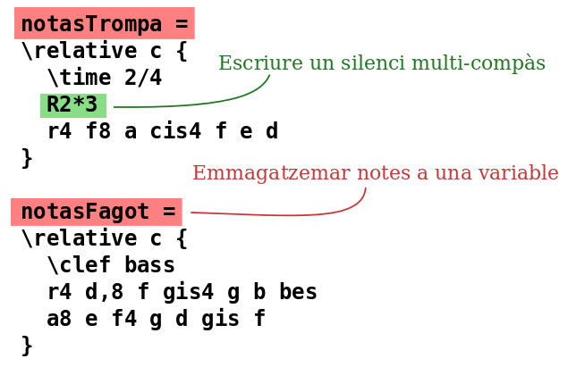

Entrada de text
“Compilar” la música

(cliqueu per veure imatge més gran ereid-shot
El LilyPond és un sistema compilat: s’executa sobre un arxiu de text que descriu la música. El resultat es pot veure a la pantalla o imprimir-se. De certa manera, el LilyPond se sembla més a un llenguatge de programació que als programes d’edició gràfica de partitures.
No escrivim la música pel procediment d’agafar les notes d’una barra d’eines gràfica i arrossegar-les a una partitura que es refresca de forma dinàmica; escrivim la música teclejant un text. Aquest text és interpretat (o “compilat”) per part del LilyPond, que al seu torn produeix una bella música impresa.
És possible que les persones acostumades a interfícies gràfiques d’usuari hagin d’aprendre una forma de treball nova, però els resultats, sense cap mena de dubte, mereixen la pena!
Nota: Presentem aquí una panoràmica del nostre paradigma d’entrada de tex: no és tan complicat com sona! No us amoïneu ara per comprendre tots i cadascú dels detalls d’aquests exemples; la nostra documentació per a principiants s’ocupa de tot això a un ritme molt més progressiu.
L’ela amb l’ela, "La"
Les notes es codifiquen mitjançant lletres i números. Les instruccions especials s’introdueixen mitjançant barres invertides.


Les alteracions es fan amb noms diferents: afegiu -is
per obtenir un sostingut, i -es per a un bemoll (són els
noms de les notes en holandès, però estan disponibles en altres
idiomes). El LilyPond esbrina on s’han d’imprimir les alteracions.

Música pop
Aplegui acords i lletra per obtenir un full guia d’acords:


Particel·les d’orquestra
El fitxer d’entrada conté les notes d’una peça musical La partitura i les particel·les es poden fer a partir d’un sol fitxer d’entrada, de manera que un canvi en una nota sempre afecta tant a les particel·les com a la partitura general. Per poder incloure la mateixa música en diversos llocs, assignem la música a una “variable” (un nom):
Aquesta variable s’usa aleshores a una sola part instrumental (aquí transportada, amb els silencis de diversos compassos agrupats):


La mateixa variable s’utilitza a la partitura general (aquí en to de concert):


Documentació per al principiant
Ens adonem que molts usuaris veuen una mica estranya aquesta forma d’introduir la música. Per aquest motiu, hem escrit una àmplia documentació d’ajuda als nous usuaris, començant amb Aprenentage. El manual d’aprenentatge és el millor per començar, perquè allí es responen moltes preguntes abans que es formulin.
Us preguem que llegeixi el Manual d’Aprenentatge abans de queixar-vos de possibles fallades del programa! Amb freqüència, els usuaris novells creuen que el LilyPond no funciona, quan de fet està funcionant exactament tal i com està dissenyat per fer-lo.
Teniu a la vostra disposició una documentació molt més profunda a la secció Manuals.
Ben Lemon, usuari del LilyPond, ha creat i publicat una col·lecció de tutorials en vídeo al seu blog, dirigits a nous usuaris.
Entorns d’edició facilitats

(cliqueu per veure una imatge més gran)
L’èmfasi del LilyPond està en primer lloc en la producció de música escrita amb la màxima qualitat; la creació d’una interfície gràfica d’usuari (un GUI) ens hauria distret d’aquesta meta. Malgrat això, hi ha altres projectes els propòsits dels quals és fer més fàcil la creació de fitxers d’entrada del LilyPond.
Alguns entorns d’edició inclouen el acolorit sintàctic, compleció automàtica d’instruccions i plantilles pre-elaborades. D’altres programes ofereixen realment un GUI que permet la manipulació directa d’una partitura gràfica. Per veure més informació, consulteu Entorns millorats.
I ara què?
Ja teniu la preparació per Descarregar el LilyPond. Encara no esteu convençut? Llegiu quelcom sobre els entorns d’edició a Entorns millorats.
Altres idiomes: English, česky, deutsch, español, français, magyar, italiano, 日本語, nederlands, 中文.
Quant a la selecció automàtica de la llengua.